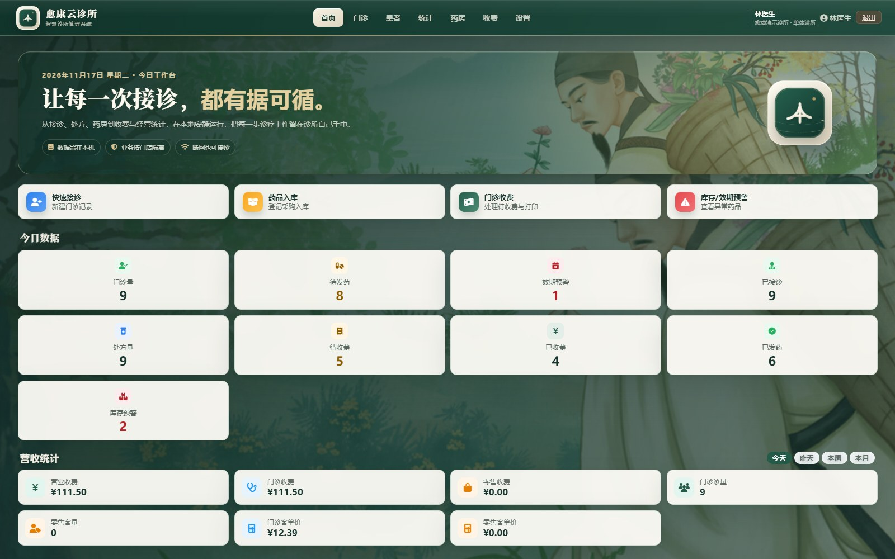
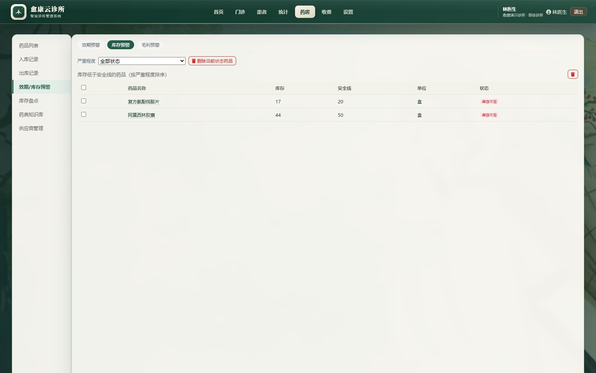
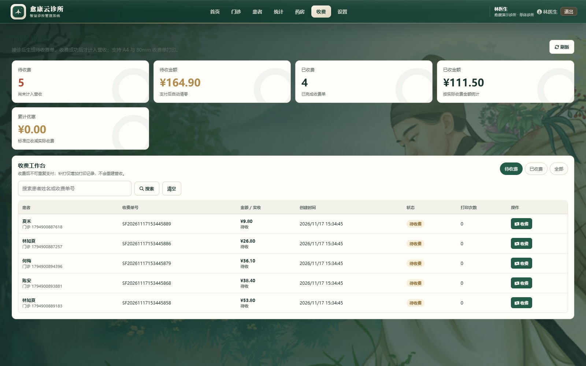
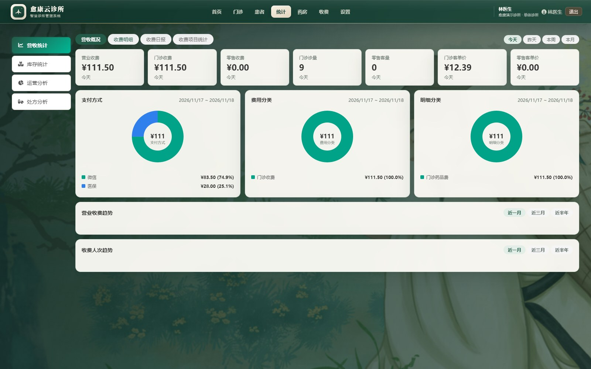
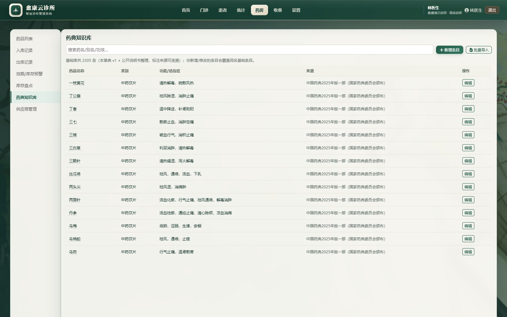

01 · 接诊建档
把一次诊疗完整写进同一条病历
患者信息、主诉、现病史、既往史、过敏史、体格检查、诊断与处方连续记录，修改已保存病历也保留业务状态。
结构化症状点选历次就诊关联病历修改留痕
愈康把患者建档、病历、处方、药房、收费和经营统计连成一张工作台。下面展示的不是概念图，而是软件正在运行时的真实界面；本地优先，断网也能完成核心业务。

不是几张彼此割裂的表，而是一条完整的接诊链路。
卡片不靠文字示意。患者病历、AI 检查、库存预警和收费账单都来自真实运行中的愈康工作台，便于在下载前直接判断产品是否适合你的诊所。
患者信息、主诉、现病史、既往史、过敏史、体格检查、诊断与处方连续记录，修改已保存病历也保留业务状态。

AI 先规划检查项，再汇总本店库存、药典证据、过敏史和相互作用风险。建议只进入待确认区，不自动保存成正式处方。

处方进入待发药区，确认发药时扣减库存并生成出库记录；低于安全库存、临近效期和毛利异常集中提醒。

待收费、实收金额、优惠与支付方式明确记录；补打小票只增加打印记录，不会重复计算收入。
所有界面均为 YuKangClinic v5.1.0 实际运行截屏，患者姓名、电话与金额均为演示数据
从患者档案到经营分析，每张卡片都直接展示对应模块的真实界面。点击截图可查看原始尺寸。

按姓名或手机号找到患者，查看过敏史、既往就诊、诊断与历史处方，不必依赖纸质本翻找。
症状与体格检查支持点选，处方信息汇总在当前病历内；修改已就诊病历时仍保留医生确认流程。
药品库存、安全线、批号、效期和出入库记录集中管理，异常库存不藏在二级菜单里。
每张收费单都能追溯到患者和门诊记录，支持待收费、已收费、支付方式与打印次数查看。

营收概览、支付方式、费用分类、收费明细与趋势分析使用同一口径，日报和经营判断不必手工对表。

机构可以自行决定是否启用 AI、选择服务商和模型；API Key 保存在本机，关闭 AI 不影响正常接诊开方。
先规划检查清单，再检索本地药典、过敏史、库存和相互作用，最后生成带证据的候选建议。医生逐条应用、修改并保存，系统不会自动把 AI 建议变成正式处方。
To third-party AI：仅发送诊疗片段，不发送患者姓名、手机号、身份证号。
药品详情可查看药典条目、功能主治与来源；AI 检索基于本地知识库，在需要时给出有出处的参考，而不是一串无法核验的结论。
知识库整理自《中华人民共和国药典（2025年版）》相关公开资料与公开药品说明书。正式临床使用请以正版出版物、药品说明书及医生判断为准。

真实药典知识库界面来源列可追溯 · 演示诊所官网只是公开产品说明和安装包下载站。诊所业务系统不部署在公网，患者数据、SQLite 数据库和登录入口不离开门店电脑或可信局域网。
接诊、病历、药房、收费与统计数据由诊所自己的电脑承载，官网不保存患者业务数据。
第三方模型只接收病情、诊疗片段和选药相关上下文，不发送患者姓名、手机号、身份证号。
关闭 AI、断网或模型服务不可用时，患者建档、病历、处方与收费仍可继续完成。
数据与 AI 开关都在设置中可见界面截屏 · YuKangClinic v5.1.0 · 演示数据
Windows 安装包适用于诊所前台电脑。电脑开机后即可在本机使用，同一局域网内的手机或平板可通过设置页显示的地址访问。
安装后创建本地数据目录，业务数据不依赖官网在线。当前安装包未进行代码签名，Windows 可能提示“未知发布者”。
愈康当前是未签名内部预览版。适合真实试用与验收，不应在未完成签名、授权和正式验收前当作大规模商业正式版分发。
官网只承载公开产品介绍和安装包下载。诊所业务系统运行在门店自己的电脑或可信局域网中，患者数据、数据库与登录入口不应直接暴露到公网。
截图中的界面布局、检查清单、证据区和医生确认流程来自真实软件；当前演示环境没有配置真实模型 Key，弹窗内容是演示响应，不应被理解为一次真实诊断或模型效果证明。
不会。AI 只提供候选建议和风险提示，医生必须逐条应用、修改并保存。AI 不替代诊断，不保证建议正确，也不能在失败时阻断正常接诊。
v5.1.0 当前安装包没有 Windows 代码签名证书，Authenticode 状态为 NotSigned。请只从本官网下载并核对 SHA256；正式商用前需要重新签名构建。
Windows 10/11 x64 · v5.1.0 · 246.9 MiB · 未签名内部预览版